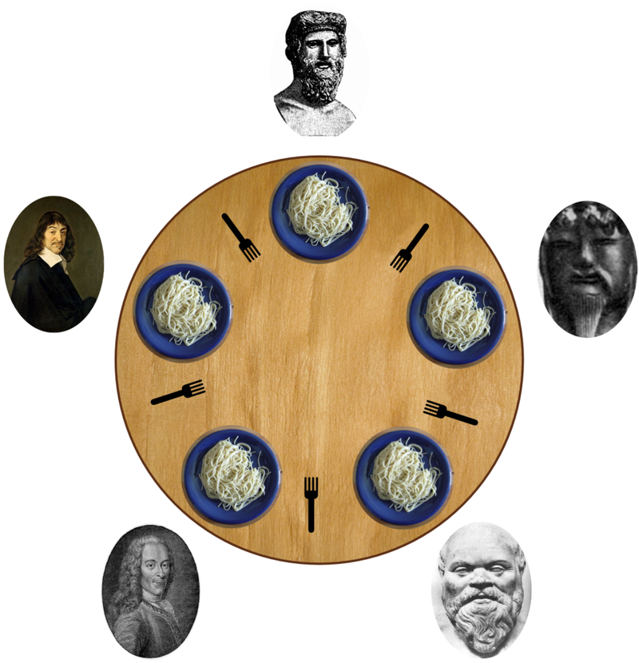

It is a simple representation of the need to allocate several resources among several processes in a deadlock-free and starvation-free manner.
Five philosophers sit around a circular table. Between each pair is a fork...
- One simple solution is to represent each chopstick with a semaphore.
- A philosopher tries to grab a chopstick by executing a wait() operation on that semaphore.
- She releases her chopsticks by executing the signal() operation on the appropriate semaphores.
- Thus, the shared data are semaphore chopstick[5]; where all the elements of chopstick are initialized to 1.
Click the button below to start the simulation and observe how philosophers avoid deadlock.
Select a language to view the implementation:
#include <stdio.h>
#include <pthread.h>
#include <semaphore.h>
#define N 5
sem_t forks[N];
void* philosopher(void* num) {
int id = *(int*)num;
while (1) {
printf("Philosopher %d is thinking\n", id);
sem_wait(&forks[id]);
sem_wait(&forks[(id + 1) % N]);
printf("Philosopher %d is eating\n", id);
sem_post(&forks[id]);
sem_post(&forks[(id + 1) % N]);
}
return NULL;
}
int main() {
pthread_t philosophers[N];
int ids[N];
for (int i = 0; i < N; i++) {
sem_init(&forks[i], 0, 1);
ids[i] = i;
}
for (int i = 0; i < N; i++) {
pthread_create(&philosophers[i], NULL, philosopher, &ids[i]);
}
for (int i = 0; i < N; i++) {
pthread_join(philosophers[i], NULL);
}
return 0;
}